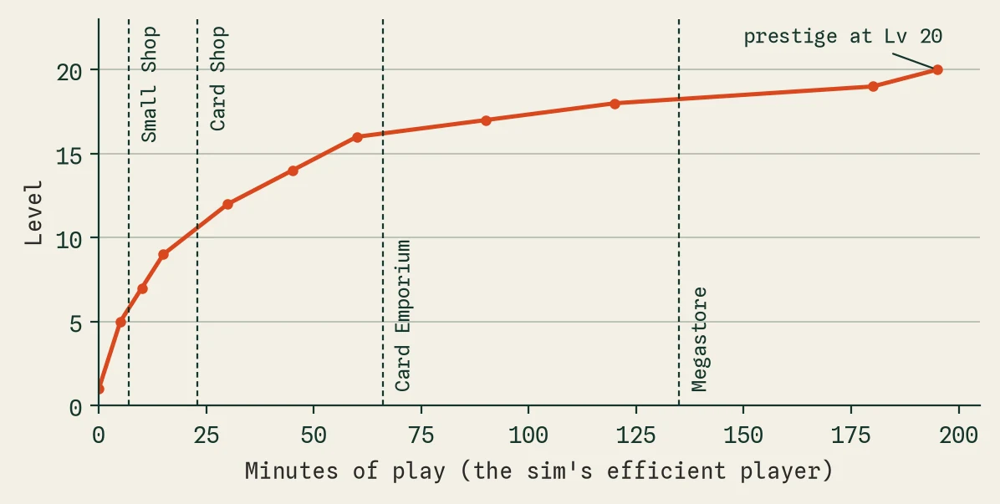

Card Shop After Dark
| Status | in progress 9 systems built and tested in Roblox Studio |
|---|---|
| Tools | Luau in Roblox Studio, Python |
| Docs | A design doc and an architecture doc, about 17,000 words together |
The question
Can a Roblox game about running a trading card shop feel rewarding to come back to every day, without pack opening turning into a money printer, and while following Roblox's rules for younger players?
What I did
Designed it on paper first. The design doc covers a card set of 26 creatures, a ten minute day and night cycle where you run the shop by day and keep sneaky Oddities out of it at night, the economy and progression, social features, and a monetization plan built around Roblox's rules. Robux never buys packs or cards, and every pack shows its odds.
Tuned the economy with a simulator. Before building anything, I wrote a Python sim that plays the game as an efficient player, always buying the upgrade that pays for itself fastest, and prints when it reaches each level, shop stage and prestige. Every pacing number in the design came from it.
Planned the architecture. The server owns the economy. One service is the only code allowed to change cash or XP, and it rejects bad numbers. Saves are session locked, so two servers can never write over the same player's data.
Built it one system a day. So far that's nine systems in Luau: the foundation, plots and shops, shelves and stock, sales, upgrades, packs, cards and balance, day and night, and the night's server side. Each one was tested in Studio with zero script errors before I moved on. For example, the economy service turns away NaN, negative, infinite, text and fractional amounts.
What I found

In the sim, the efficient player reaches a Small Shop in 7 minutes, a Card Shop in 23, a Card Emporium in 66 and the Megastore in 135, and can prestige at level 20 after 195 minutes. Real players should take about 1.5 to 2 times longer, since they also open packs, decorate, trade and hunt Oddities at night.
The sim also prices every pack. Except for the Basic Pack, every pack returns about 92% of its cost on average if you sold every card at full value. Opening packs is the fun part, but it loses a little money over time, so the money still comes from running the shop.
What I'd do next
- Test with two real players at once. Studio has only run solo playtests so far.
- Finish the launch scope, publish, and start Roblox's review so younger players can find it.
- Compare real players' timings against the sim and retune the numbers.